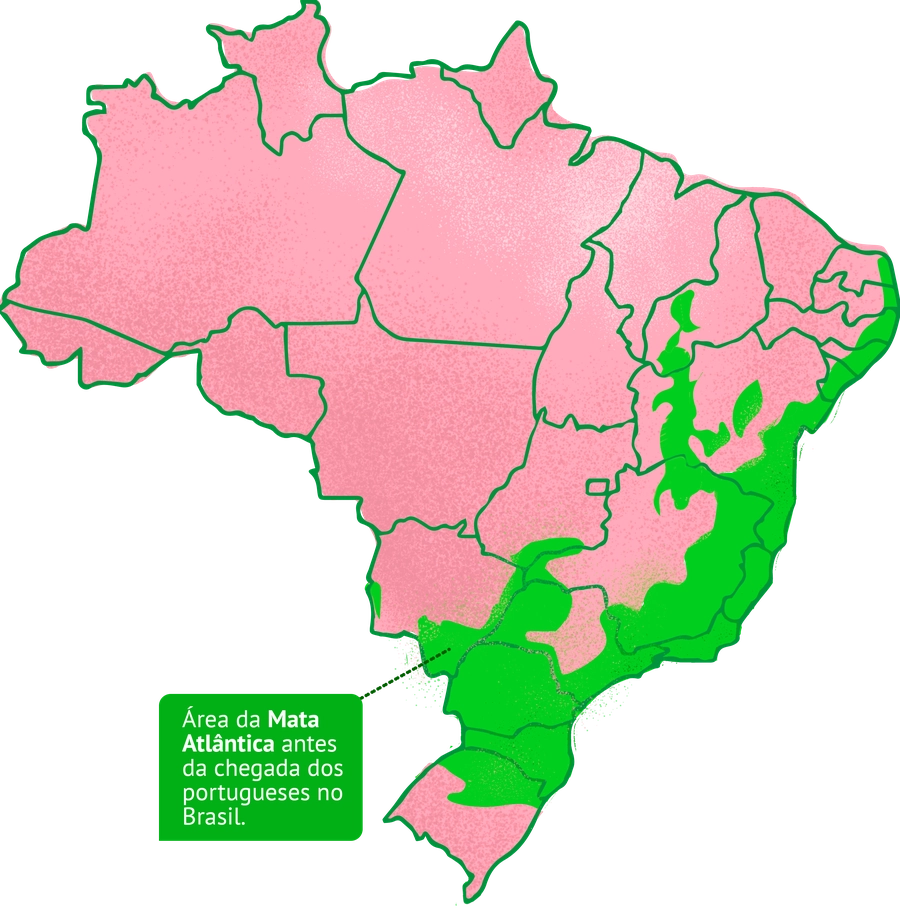
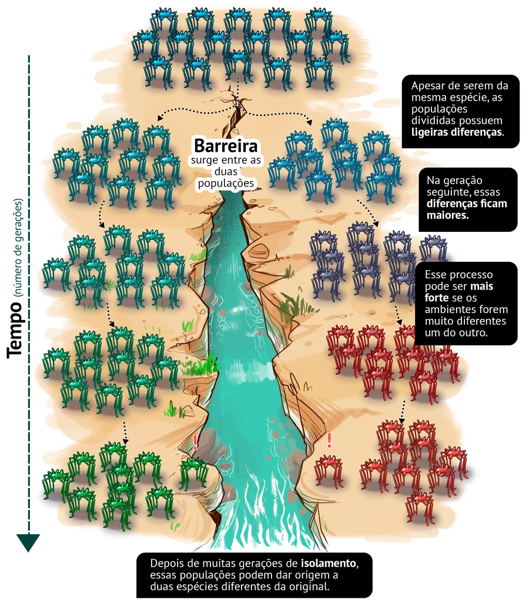
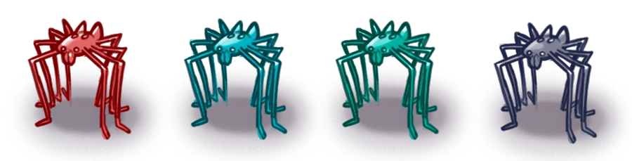

Barreiras que geram diversidade
A Mata Atlântica, no passado, já foi muito diferente do que é hoje. Porém, mesmo olhando para como ela
está hoje, é possível perceber grandes diferenças dentro de seu território.
Ela cobre uma ampla região ao longo dos 4000 km de costa brasileira, da linha do Equador ao sul do
Brasil. Por causa desse alcance, está sujeita a diferentes condições climáticas. Há também a variação
entre o oeste e o leste: as florestas do interior são muito diferentes daquelas encontradas na beira do
mar. Por fim, há também a variação de altitude: a Mata Atlântica cobre terrenos que variam ao nível do
mar até 2700 m. Todos esses fatores geram a grande diversidade de plantas e de animais dentro desse
bioma.

Mapa das áreas que hoje consideramos Mata Atlântica. Com destaque
para a região onde estudos do projeto AF Biota concluíram a ocorrência de divisão de populações
entre a Serra da Mantiqueira e a Serra do Mar.
Como consequência, a vida dentro desse bioma é como peças de um mesmo quebra-cabeça: cada pequena porção
dessa floresta tropical abriga diferentes tipos de plantas, animais e microclimas.
Mas como explicar essa pluralidade de aparências em uma floresta úmida? A história de um rio pode ajudar
a responder essa pergunta. Localizado no sudeste do Brasil, o Rio Paraíba do Sul atravessa as calhas do
Vale do Paraíba, passando por cidades dos estados de São Paulo, Minas Gerais e Rio de Janeiro. Porém, o
relevo dessa região nem sempre foi assim. Há milhões de anos atrás, existia nessa região apenas uma
grande planície homogênea. Os movimentos do solo de 50 milhões de anos atrás resultaram na formação de
uma depressão: o vale que hoje divide a Serra do Mar e a Serra da Mantiqueira.

Essas separações de populações podem ser causadas por diversos fatores naturais, como surgimento de
rios, elevação do nível do mar (e consequente isolamento de ilhas) e surgimento de montanhas e vulcões.
Mas também podem ser causadas pelo ser humano, como construção de cidades ou rodovias.
Evidências desse processo são encontradas em estudos de opiliões, pequenos invertebrados que são
perfeitos para esse tipo de pesquisa, pois colonizam pequenos territórios. Ao analisar a história
evolutiva desses aracnídeos no sudeste da Mata Atlântica, é possível concluir que várias espécies que
hoje tem uma distribuição pequena, no passado pertenceram a uma única espécie com ocorrência geográfica
bem mais abrangente Ou seja, essas espécies que hoje estão separadas, já foram unidas um dia. Essas
evidências também são observadas quando estudamos aves, répteis, peixes e plantas desse mesmo bioma.

Entender a história de como essa biodiversidade se originou e evoluiu nos permite compreender melhor
como essas espécies podem responder às mudanças climáticas globais e às degradações ambientais causadas
pelo ser humano. Uma das previsões para o futuro, por exemplo, é o derretimento das geleiras que vai
causar a elevação do nível do mar, isso pode isolar populações em áreas mais elevadas (como se fossem
ilhas). Outro fator que gera esses isolamentos é o desmatamento, que pode separar porções de mata onde
vivem populações de espécies. Sendo a área desmatada a principal barreira que os separa.
Assim, esses estudos ajudam a nós, seres humanos, decidirmos como agir para conservar essas espécies em
face desses problemas. Tanto no sentido de evitar que essas separações ocorram quanto no de auxiliar
essas espécies a sobreviverem em casos de fragmentações já ocorridas.